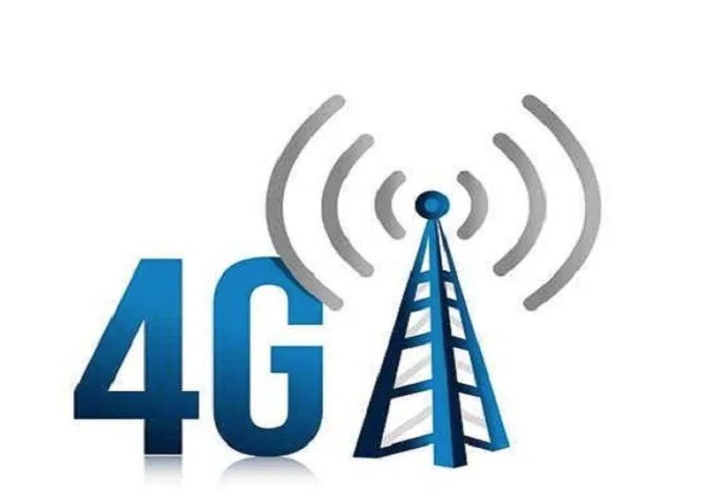

Arpitha Vinod arpithav@teenhacksli.com
Have you ever looked up at the night sky and saw the bright white moon and wondered how life would be like there- no internet or phone, just you? Well dream all you want because in just two years, you will be able to send a text all the way from the moon .
By 2028, NASA hopes to make humans living on the moon a real thing. As a step to achieve this plan set by NASA's Artemis program , NASA has chosen to work with Nokia to build a 4G network on the moon . Nokia’s industrial research and scientific development company, Bell Labs , was awarded a 14.1 million dollar grant from NASA for this project, and it is working with the spaceflight engineering company Intuitive Machines to go about this riveting task.
So why can’t astronauts just take a social media cleanse when in space? Communication and reliable technology is critical for the improvement of future lunar missions, and a 4G network is much more stable than the current radio communicationin place. Astronauts can use the wireless connection to control lunar rovers, live-stream high quality videos, transmit data, make a call, text, and even navigate in real time (sort of like a Google Maps for the moon). Furthermore, 4G might work even better on the moon since there are no trees, tall buildings, or TV signals to block the connection.
However, there are some limitations that Bell Labs is taking into consideration to adapt this network to the moon’s different conditions . For example, the network needs to be adapted to work well with the moon’s extreme temperatures, radiation, the space vacuum, as well as the extreme vibrations that occur on the surface during lunar landings and takeoffs. Nevertheless, NASA says, “The system could support lunar surface communications at greater distances, increased speeds, and provide more reliability than current standards.”
While 4G on Earth is supported by huge cell towers and power generators, that might be too gigantic to fit inside a spaceship headed to the moon. As a result, Bell Labs is creating small-cell technology which is much more compact and uses less power than normal 4G. This same small-cell tech is used in 5G on earth, and is able to withstand the most extreme conditions. By 2022 , NASA and Nokia Bell Labs are planning on installing the network remotely through lunar hoppers - a type of space vehicle.
As space exploration intensifies, it is intriguing to see how normal communication through texts can be achieved even on the moon. With the development of the 4G network, there is no telling how much astronauts can research and develop in the coming years. They say the sky's the limit, but now your calls can reach even further than that.